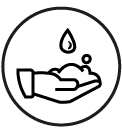
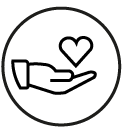
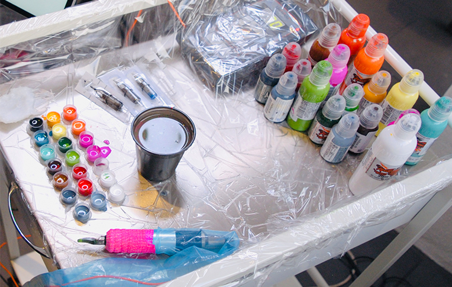
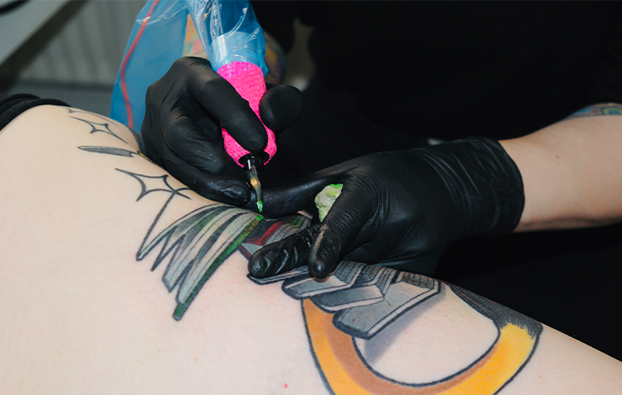

INFORMATION
Forberedelse
Her er en kort liste over forberedelser til din næste tatovering
- Få en god nattesøvn natten optil
- Spis et godt måltid inden, bring eventuelt lidt mad og drikke med til en længere session. Sukkerholdige fødevare er gode for at undgå at gå sukkerkold.
- Husk dine inspirationskilder
- Undgå at drikke alkohol og koffein allerede dagen før, dette kan medføre yderligere blødninger, som kan resultere i at blækket ikke sidder lige så godt fast.
Hygiejne
Her ser du en kort liste over vores hygiejniske forbehold
- Alt sprittes af inden og efter sessions
- Brikse og borde pakkes ind i folie
- Ledninger iføres engangsplastik sleves
- Vi anvender engangsnåle
- Vi anvender vandtæt elastikbind til isolering af maskinerne
- Vi benytter altid mundbind og handsker
- Alt engangsmateriale smides ud efter sessions
- Alt indpakning er fra medicinalindustrien
- Vi bruger destilleret vand under processen.
Pleje
Her er en kort liste over hvordan du plejer din nye tatovering
- Fugt og beskyt din tatovering
- Vask din nye tatovering efter et par timer
- Påfør jævnligt fugtighedscreme
- Hold din tatovering ren og tør
- Undgå direkte sollys
- Vær tålmodig og lad din tatovering hele
- Undgå at klø i din tatovering
UDSTYR
Blæk
Vi går aldrig på kompromis med kvaliteten af vores udstyr, derfor bruger vi udelukkende kun godkendt kvalitets blæk, som er fri for skade kemikalier og testet forinden.

Maskine
Hos os benytter vi os af forskellige maskiner til de forskellige stilarter. Alle vores maskiner er af top kvalitetsmærket “inkjecta” som er en af de førende tattoo maskiner på markedet. Derudover benytter vi os kun af de bedste nåle på markedet.
